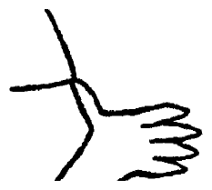
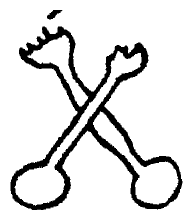

[p308-01]
ט Delays
Ω Delays are Dangerous.: N46 (VI.B.36): 265(d)
ט Vitavite
ט Gobble
Delays are Dangerous. Vitavite! Gobble
[p308-L01]
Xenophon.
[p308-02]
Anne: tea's set, see's eneugh! Mox soonly
[p308-03]
ט split second
Ω split second: N46 (VI.B.36): 310(a)
Ω the chancellory: N46 (VI.B.36): 58(e)
ט chancellory
will be in a split second per the chancellory
[p308-04]
ט exticker
of his exticker.
[p308-L02]
Pantocracy.
[p308-L03]
Bimutualism.
[p308-L04]
Interchangeabil-
[p308-L05]
ity. Naturality.
[p308-L06]
Superfetation.
[p308-L07]
Stabimobilism.
[p308-L08]
Periodicity.
[p308-R01]
MAWMAW,
[p308-R02]
LUK, YOUR
[p308-R03]
BEEEFTAY'S
[p308-R04]
FIZZIN OVER!
[p308-05]
ט Aun
Ω Aun: VI.C.1: 61(f)
Aun
[p308-06]
Ω Do: VI.C.1: 61(f)
Do
[p308-07]
Ω Tri: VI.C.1: 61(f)
Tri
[p308-08]
Ω Car: VI.C.1: 61(f)
Car
[p308-09]
Cush¹
[p308-10]
Ω Shay: VI.C.1: 61(f)
Shay
[p308-L09]
Consummation.
[p308-L10]
Interpenetrative-
[p308-L11]
ness. Predicam-
[p308-L12]
ent. Balance of
[p308-L13]
the factual by the
[p308-L14]
theoric Boox and
[p308-L15]
Coox, Amallaga-
[p308-L16]
mated.
[p308-L17]

[p308-L18]

[p308-11]
Ω Shockt: VI.C.1: 61(f)
Shockt
[p308-12]
Ω Ockt: VI.C.1: 61(f)
Ockt
[p308-13]
Ω Ni: VI.C.1: 61(f)
Ni
[p308-14]
Geg²
[p308-R05]
KAKAO-
[p308-R06]
POETIC
[p308-R07]
LIPPUDENIES
[p308-R08]
OF THE
[p308-R09]
UNGUMP-
[p308-R10]
TIOUS.
[p308-15]
ט feed
Their feed begins.
[p308-16]
ט NIGHTLETTER
Ω NIGHTLETTER: VI.C.6: 52(m)
NIGHTLETTER
[p308-17]
ט youlldied
ט greedings
ט Pep
With our best youlldied greedings to Pep
[p308-18]
and Memmy and the old folkers below and
[p308-19]
ט beyant
beyant, wishing them all very merry Incar-
[p308-20]
ט livvey
nations in this land of the livvey and plenty
[p308-21]
of preprosperousness through their coming
[p308-22]
ט yonks
new yonks
[p308-23]
from
[p308-24]
jake, jack and little sousoucie
[p308-25]
(the babes that mean too)
[p308-F01]
ט Kish
ט anticheirst
¹ Kish is for anticheirst, and the free of my hand to him!
[p308-F02]
ט gags
ט crossbuns
ט whopes
² And gags for skool and crossbuns and whopes he'll enjoyimsolff over
[p308-F03]
ט on the line
our drawings on the line!
[p308-scans]
Page images: 1939 Faber, 1958 Viking. Edition of 2010 (Rose and O'Hanlon): pp. 236–237, on the James Joyce Digital Archive.